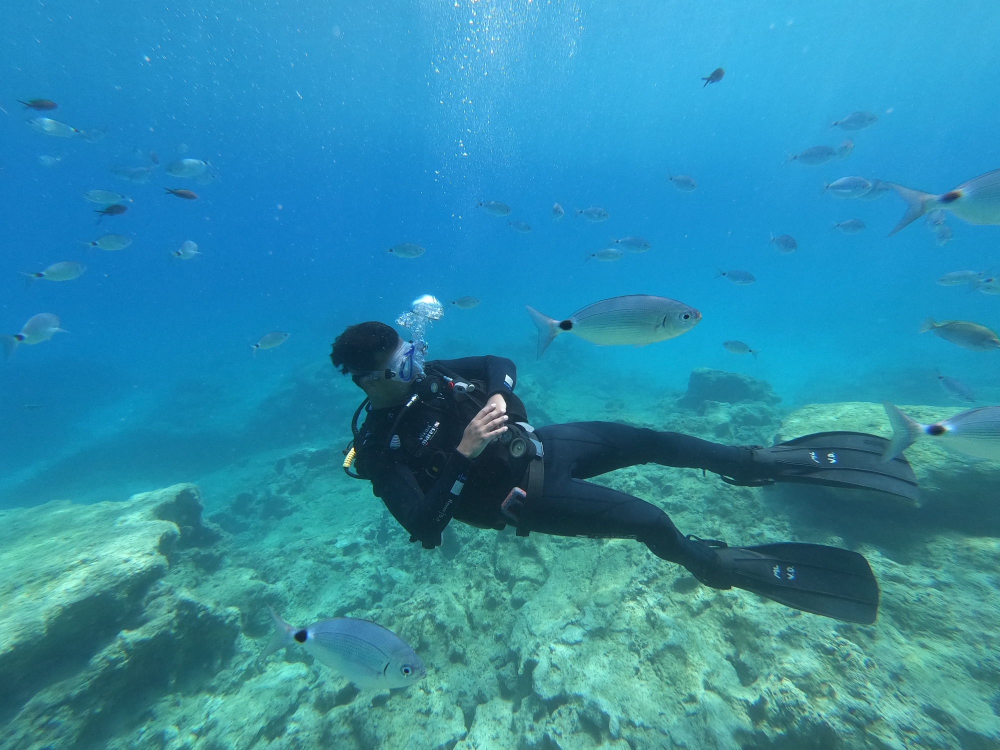

Carlos Ebrahim Vendrell
Home
About me
Contact
Travel
Travel Map
Volunteering
Flight Log
Dive Log
Photography
Gallery
Northern Lights
Tech
XR Videos
Reality Capture
AI Playground
Flight Radar
3D Printing
Food for Thought

Travel
Dive
Log
—
Logged
20
m
Max Depth
9
Countries
7
seas
Waters